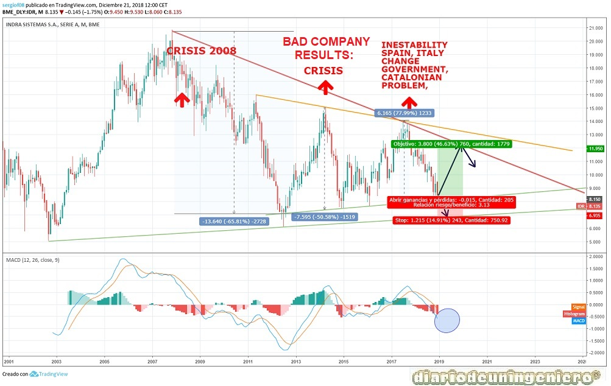
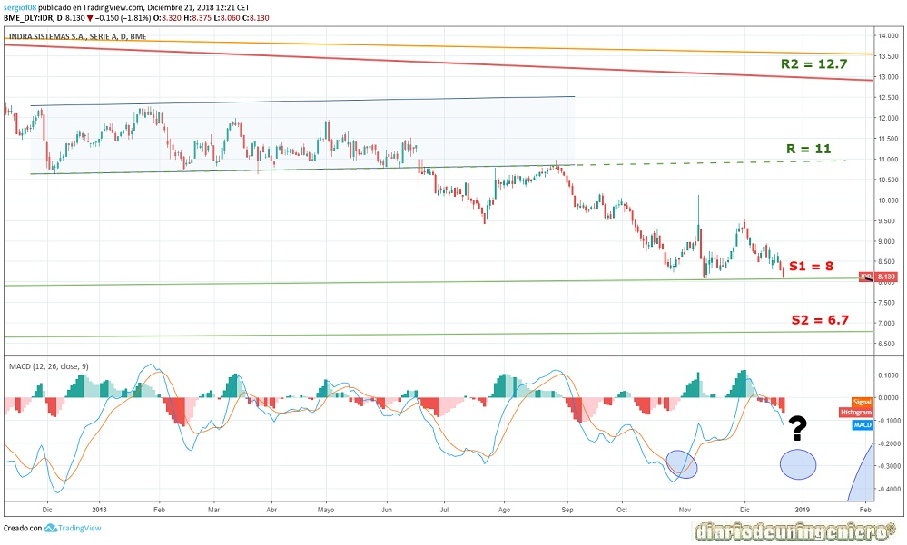

Indra Sistemas es una empresa multinacional española orientada a los servicios de consultoría, transporte, energía y defensa, el cual es su sector principal. Es la mayor empresa de armamento de España, siendo una de las más importantes de Europa. Teniendo España como empresas principales de defensa, AIRBUS MILITAR, Navantia, Urovesa y Tecnobit.
Esta empresa que cotiza en el IBEX35 desde el año 1999, es la fusión entre la empresa Ceselsa y el grupo público Inisel. Esta fusión se llevo a cabo en 1992 y desde entonces la estructura de la empresa es la siguiente:
Indra tiene como principales accionistas el Estado, mediante el SEPI, y la familia March, grupo que llego a tener mucho poder en tiempos de Franco. Otros grupos que la controlan son fondos de Estados Unidos y bancos españoles.
Desde 2000 hasta 2010 el número de contratos en Indra no paraba de ascender y la empresa realizó una increíble expansión hacia otros países. En esto tuvo que ver la crecida de la economía española y también los contactos tan estrechos de esta empresa con el gobierno. Ya sean gobiernos socialistas o gobiernos populares Indra siempre fue un juguete del estado. El que fue entonces presidente de Indra, Javier Monzón, tuvo que ver también tanto con la subida de Indra a empresa de primer nivel como con la estrepitosa caída en la que a punto estuvo de quebrar. Si no fuera porque esta lo que realiza esta empresa es de carácter estratégico y mandatario ya sería de algún banco o de algún empresario.
En 2013, Indra tras empezar a declarar pérdidas abultadas y información que no contrastaba en términos contables se realizaría una investigación por parte de diferentes medios. Estas investigaciones verían los contratos inflados que se tenían y las supuestas mordidas de personas influyentes de la empresa. A día de hoy esto sigue sucediendo, pero de una manera mucho más seria y profesional y sobre todo más ligera ya que cuenta con varias auditorías externas en algunos departamentos.
El susodicho presidente tras dejar el cargo con la empresa con numerosas incógnitas en cuanto a viabilidad recibiría cerca de 20 millones de euros como finiquito, cuando la empresa asociaba un ERE con el que volvería a jugar en primera línea ya que afirmaba que se ganarían 100 millones de euros en 3 años gracias a los despidos de trabajadores, que ciertamente no realizaban apenas ningún trabajo. Dicho de otra manera, trabajadores fantasmas que en la España de aquel entonces con cerca de un 20% de paro cuesta mucho de creer. Este presidente como he comentado anteriormente estuvo en Indra casi 25 años y es que justamente antes llegaría a ser clave en los 80 en la llegada de Telefónica a Sudamérica, gracias a que lo coloco Luis Solana, hermano del exsecretario general de la OTAN y referente del socialismo en los 90. Después pasaría a Deloitte, antes de entrar en Indra. Curiosamente esta empresa sería la que auditoraría por muchos años Indra, a gusto del presidente.
Más tarde todos estos años de favores socialistas y de gobiernos populares serían respondido con numerosos nombramientos como el hijo de Felipe González o Josep Pujol Ferrusola, hijo del expresidente de la Generalitat, el molt honorable del 3%. Se daría dinero para financiar al PP también como otras muchas empresas de España.
En 2014 tras varios años de desfalcos y excesos el presidente sería cesado, pues y para ello el estado se intercambiaría cromos pasando una parte de las acciones de la antigua Caja Madrid (BANKIA) a Telefónica. A partir de ahí poco que decir, el presidente nuevo sería el mismo que el de Telefónica y crearía un plan estratégico para empezar a crear beneficio de la empresa y no que continuase siendo un pozo sin fondo.
Este cambio se puede ver a nivel de fundamentales, viendo como a partir de 2015 la empresa empezaría a reducir deuda de manera asombrosa. El nuevo presidente de Indra Fernando Martorell y su nuevo equipo realizarían una gestión esplendida, llegando a dejar la deuda en tan solo 380 millones a este año. El EBIDTA ha ido subiendo y la relación con la deuda está a niveles de una empresa saneada y fuerte. El plan estratégico era con vistas a 5 años siendo 2020 el último año que acaba.
Dicho esto, no solo ha sido el presidente nuevo sino la actual situación de la economía española que es mucho mejor que hace 8 años. También tiene que ver mucho la reducción de sueldos en la empresa y la política de contratación de becarios o ingenieros jóvenes, que han realizado un sacrificio enorme para sacar la empresa adelante. A mi modo de ver, habiendo trabajado dentro de esta empresa y siendo medio pública ya que la controla en cierta medida el estado y las personas influyentes del país, esperaría que los buenos resultados repercutan en los trabajadores cuando acabe el plan estratégico.
A continuación, presento los datos de fundamentales que me parecen más importantes:
| ### | 2014 | 2015 | 2016 | 2017 | 2018 |
|---|---|---|---|---|---|
| Deuda/ Caja empresa | Deuda Total (M) | 663 | 904 | 692 | 556 | 388 |
| Beneficio/valor acción | |||||
| Capitalización(M) | 1.324 | 1.422 | 1.708 | 2.014 | 1.522 |
| EBDITA (M) | 321 | 282 | 227 | 127 | 268* |
| PER | 8,96 | 11,09 | 16,52 | 25 | 12,96 |
| Beneficio Neto (M) | - | -641 | 70 | 127 | 114** |
| Dividendo | 27.6777 | ||||
| Deuda/EBDITA | 2,06 | 3,2 | 13,8 | 4,37 | 1,44** |
Si nos centramos en el gráfico de largo plazo observamos que existe una subida exponencial desde la crisis de las .com en 2001 y la guerra de Irak que llevaría a los índices americanos a mínimos. Continuaría con una creciente subida que llevaría los títulos de la empresa a revalorizarse desde los 6 euros hasta más de 20 euros en apenas 5 años. Casi un 400%, y es que en esa época otros bienes tuvieron un ascenso similar como la vivienda. Sin embargo, no llegaría al boom de la bolsa española cuyo índice de referencia, el IBEX35, llegaría a batir los 15.000 puntos.
Desde 2007 a 2012, coincidiendo con el pinchazo de la burbuja inmobiliaria la crisis bancaria mundial, y la empresa sufriría la vuelta a la realidad. Descendiendo a casi niveles anteriores, 7 euros por acción, un 67% de caída desde máximo. Ésta vez sin embargo sería en la mitad de tiempo que la subida, 3 años y medio. Y es que las caídas tienen mayor aceleramiento que las subidas como todos sabemos. A partir de aquí el IBEX y todos los índices europeos realizarían un rebote que poco tiene que ver con la situación de la empresa.
Este rebote respondería al sobrecastigo del IBEX y sería mas un rebote especulativo a diferencia de otros rebotes de empresas cotizadas del IBEX. En cuanto llegarán noticias de todos los escándalos ocurridos en los últimos años en cuanto a perdida de contratos y disminución del beneficio en ciertos proyectos, se miraría con lupa todo y el futuro de la empresa sería decidido desde el gobierno de Mariano Rajoy.
A partir de medidas impopulares como disminución de salarios y despido colectivo, y evitar gente redundante en la empresa empezaría a despegar, si bien la cotización sufriría en 2015 debido a la crisis de todos los valores españoles por el desplome del precio del petróleo a finales de 2015. A partir de ahí, recuperaría niveles pasados y chocaría contra la nueva resistencia temporal, esta vez en 14 euros, que coincide con los máximos de los índices europeos con la victoria de Macron en mayo de 2017.
A partir de aquí ha ido sufriendo un acoso y derribo se dice por no tan buenos resultados como se esperaba. Esto en realidad se debe a cambios políticos y a movimiento desde dentro. Este valor no refleja en muchos momentos la realidad de la empresa, ya que el grueso de las acciones las tiene grupos afines al gobierno. Ahora mismo esta sometida más al indice de referencia, el IBEX35, ya que es un valor con el que correlaciona a la perfección salvo cuando hay problemas internos como el caso de los últimos años de gestión realizadas por el expresidente Monzon. Curiosamente ahora a encontrado trabajo en el grupo PRISA, grupo muy vinculado a los gobiernos socialistas con los que tuvo contacto. Y es que la bolsa va muy ligada a la economía que está directamente influenciada con la política desgraciadamente. Y más en valores como la defensa del país como es este.

Si nos fijamos en el corto plazo, veremos como se ha llegado a un momento clave con la aproximación al nivel de soporte de los 8 euros. Lo más normal sería que subiera en los próximos 6 meses y con fuerza con ganas de alcanzar los 11 euros, para luego corregir. En caso de que perdiese los 7,7 euros se podría ir a mínimos como son los 6,7 euros. Esto se produciría en el caso de una debacle en los indices americanos que podrían afectar al IBEX35. Para que estos valores se alcanzasen el IBEX tendría que estar rondando los 7.500 puntos, cosa bastante improbable pero posible.
Para terminar, decir que INDRA no es un valor para invertir pero si para cerrar carteras, de manera que la beta de variación venga más relacionada con el IBEX35 en caso de caídas en algún valor particular. Además salvo sustos como el de 2013, este valor se comporta bastante estable. Eso si el crecimiento con el tiempo nunca será el mismo que una empresa totalmente privada, y más en el sector tecnológico, ya que el retorno al accionista no es el mismo y el futuro crecimiento normalmente sirve para pagar favores o encaminar nuevos proyectos.

Usando este sitio web aceptas nuestros Terminos y condiciones. Por favor Aceptar esto antes de usar el sitio web.
© 2016 - All Rights Reserved - Diseñada por Sergio López Martínez
El sitio se mantiene gracias a la publicidad, por favor Desactiva Adblock para seguir navegando
He desactivado Adblock![[Valid RSS]](https://www.feedvalidator.org/images/valid-rss-rogers.png "Validate my RSS feed")